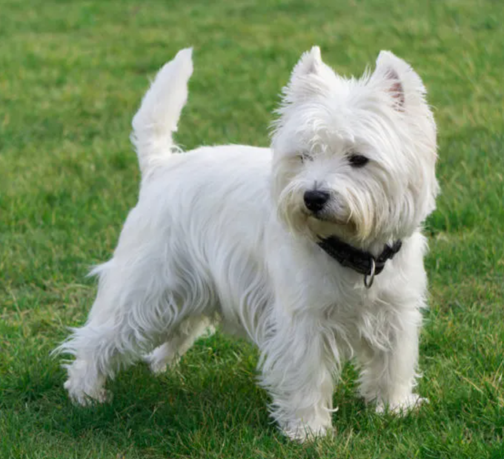
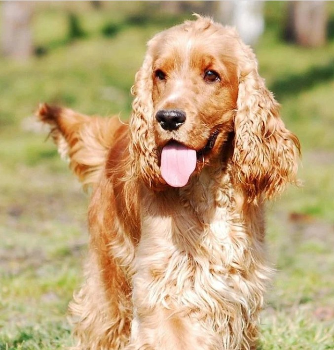
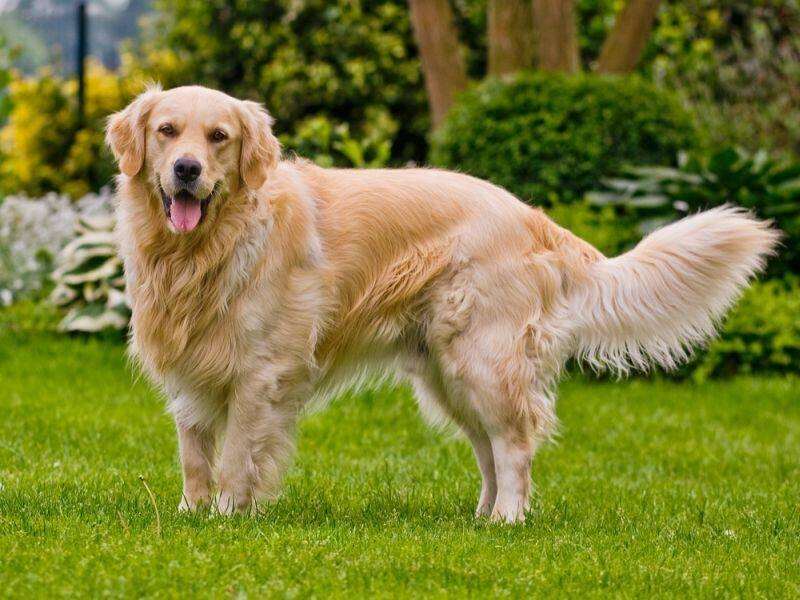
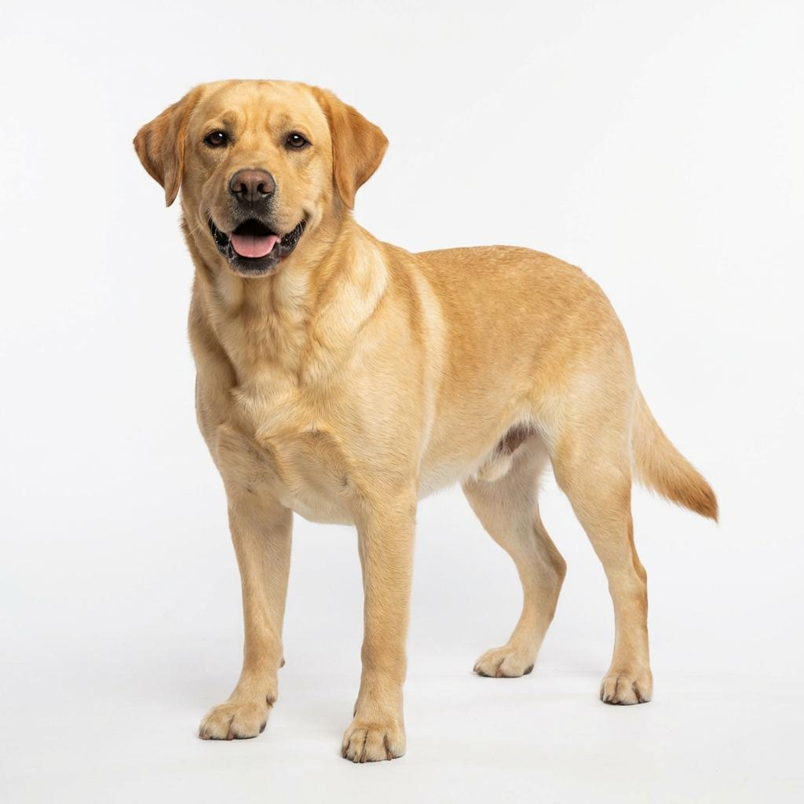

El West Highland White Terrier (Westy) es un perro originario de Escocia, criado históricamente para la caza menor. Aunque es compacto (hasta 28 cm y 9 kg), destaca por su complexión fuerte, ágil y su característico pelaje blanco de doble capa que lo protege de la intemperie.
Posee el clásico carácter terrier: es independiente, valiente, curioso y enérgico, además de muy afectuoso y juguetón con su familia. No obstante, su instinto de cazador puede hacerlo territorial y propenso a ladrar o cavar.
Se adapta bien a vivir en apartamentos siempre que reciba ejercicio y estimulación constante. Asimismo, su cuidado requiere atención especial, con cepillados frecuentes, técnicas como el stripping y vigilancia de su piel ante posibles alergias.

El Cocker Spaniel es un perro mediano originario del Reino Unido, criado inicialmente para la caza de aves (origen de su nombre por la becada o woodcock). Físicamente destaca por sus orejas largas y caídas, mirada expresiva y pelaje sedoso.
Es sociable, enérgico, inteligente y muy afectuoso con su familia, con la que crea un estrecho apego. Aunque se lleva bien con niños y otras mascotas tras una buena socialización, requiere atención constante, paseos diarios y estimulación mental para mantenerse equilibrado.

El Golden Retriever suele destacar por su carácter dulce, afectuoso y sensible. Disfruta pasando tiempo con su familia, recibiendo caricias y participando en actividades compartidas. Muy afectuoso: suele buscar el contacto y la compañía humana. Sensible: puede responder especialmente bien a una educación paciente y positiva. Juguetón: disfruta de los paseos, los juegos y el agua. Inteligente: aprende con facilidad y puede desempeñar tareas de asistencia. Sociable: suele llevarse bien con personas y otros animales si está bien socializado.Es una raza maravillosa para quienes buscan un compañero cercano, cariñoso y participativo.

El Labrador Retriever suele ser un perro entusiasta, amistoso y lleno de energía. Le encanta jugar, explorar, nadar y realizar actividades con sus dueños. Muy juguetón: suele conservar su entusiasmo durante buena parte de su vida. Activo: necesita paseos, ejercicio y estimulación mental. Sociable: generalmente disfruta de la compañía de personas y otros perros. Inteligente: destaca en el adiestramiento, el trabajo de asistencia y el rescate. Motivado por la comida: muchos labradores aprenden muy bien mediante premios, aunque es importante controlar su alimentación. Es una excelente opción para personas y familias que disfrutan de las actividades al aire libre y pueden dedicar tiempo a su ejercicio diario.
